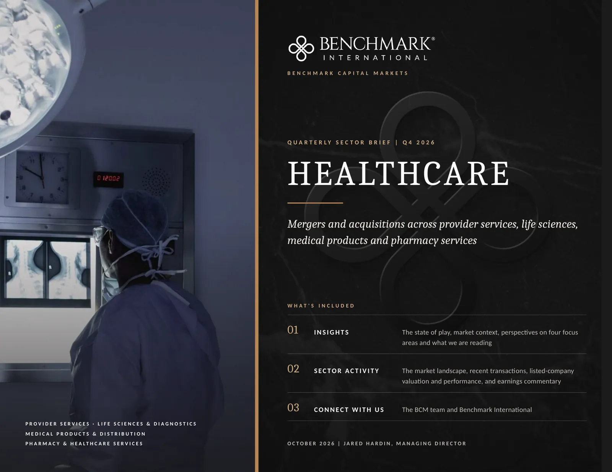
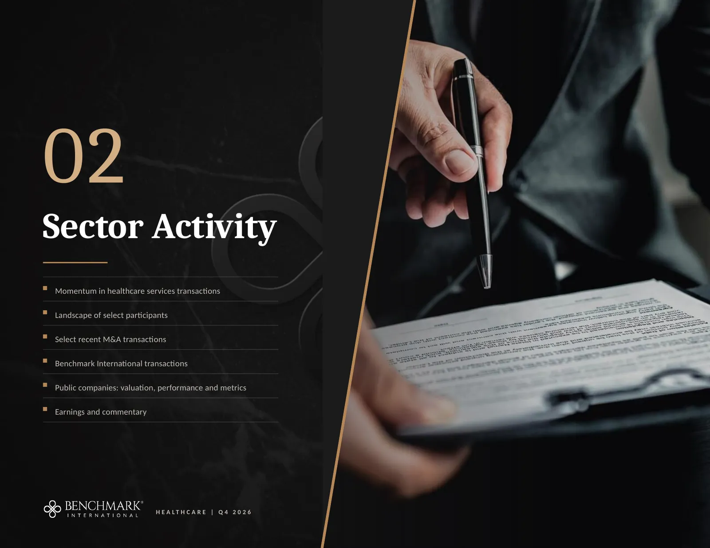
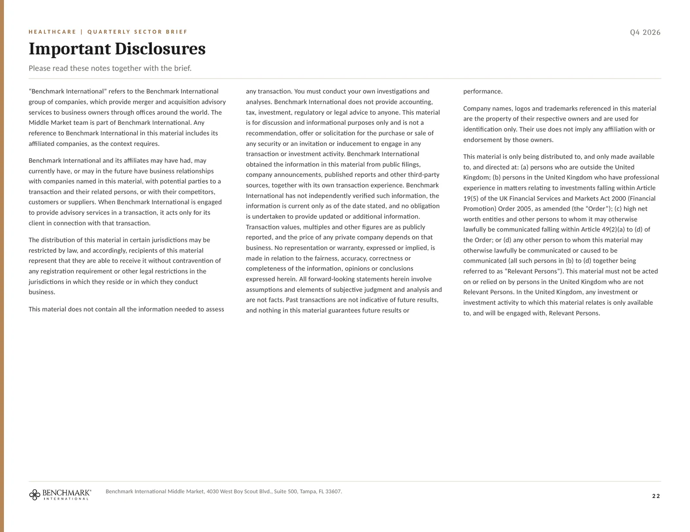

This is the Healthcare Q4 2026 sector report, page by page, exactly as it appears in the PDF. Links on each page open their sources, and the text of every page, with its tables and chart data, is below each page.

Read the text of this page
PROVIDER SERVICES · LIFE SCIENCES & DIAGNOSTICS
MEDICAL PRODUCTS & DISTRIBUTION
PHARMACY & HEALTHCARE SERVICES
MIDDLE MARKET
SECTOR REPORT | Q4 2026
HEALTHCARE
Mergers and acquisitions across provider services, life sciences, medical products and pharmacy services
WHAT'S INCLUDED
INSIGHTS
The state of play, market context, perspectives on four focus areas and what we are reading
SECTOR ACTIVITY
The market landscape, recent transactions, listed-company valuation and performance, and earnings commentary
CONNECT WITH US
The Middle Market team and Benchmark International
OCTOBER 2026 | JARED HARDIN, MANAGING DIRECTOR
Read the text of this page
Healthcare M&A: state of play
Historical market context
Fundamentals supporting activity
Perspectives on four focus areas
What we're reading
HEALTHCARE | Q4 2026
Read the text of this page
Strategic buyers are setting the pace in 2026 while private equity completes fewer healthcare services transactions.
M&A market dynamics
Private equity completed an estimated 337 healthcare services transactions in the first half, a pace of 674 for the year and the slowest since 2017 (PitchBook via Fierce Healthcare).
Strategic buyers carried more of the activity. Medtech deal value reached $36.5 billion in the first half (PwC via MedTech Dive) and health systems announced 18 transactions in the second quarter (Kaufman Hall).
Biopharma deal value reached $130 billion in six months, almost matching the total for all of 2025 (IQVIA).
Reimbursement and policy
Medicare has proposed 2027 physician conversion factors of $33.17 and $32.84, reductions of 1.19% and 1.68%, with the final rule pending (CMS).
Hospital outpatient, surgery center and home health rates are each proposed to rise 2.4% (CMS outpatient rule; CMS home health), and Medicare Advantage rates rise 2.48% (CMS rate notice).
Medicaid work requirements and six-month eligibility reviews for expansion adults begin in 2027 (Medicaid.gov).
Financing and macro backdrop
The Federal Reserve raised its target range to 3.75% to 4.00% on September 16 (Federal Reserve) and the 10-year Treasury yielded 5.24% on October 1 (US Treasury).
Direct lenders widened buyout loan spreads to an average of 509 basis points in the second quarter from 474 in the first (PitchBook).
Completed middle-market transactions in all industries averaged 7.0x EBITDA, with senior debt priced at 7.8% (GF Data via ACG).
Demand fundamentals
National health spending grew 6.8% in the year to July 2026 and represented 18.4% of GDP (Altarum).
CMS projects nearly $9.0 trillion of spending in 2034, or 20.6% of GDP, on average annual growth of 5.4% (CMS).
Healthcare employers added 17,000 jobs in September against a twelve-month average of 33,000 (Bureau of Labor Statistics).
Trade and deal regulation
A 100% default tariff applies to covered patented pharmaceuticals, with country and company exceptions and generics excluded (White House proclamation). The medical device investigation remained open in September with no tariff imposed (iData Research).
California now requires transaction notices from private equity groups and management services organizations (Nixon Peabody), and Maine's 180-day notice and approval regime begins January 1, 2027 (BakerHostetler).
WHAT IT MEANS FOR OWNERS
Buyers are paying most readily for revenue that recurs under contract or clinical necessity and that is paid by a balanced mix of payers.
The median private equity entry multiple for healthcare services was 13.6x EBITDA in 2025, a figure weighted toward larger platforms (PitchBook via Becker's ASC Review), and 87% of sales above $5 million in all industries drew three or more offers (IBBA and M&A Source).
Figures are the latest published as of October 7, 2026 and each is linked to its source. Deal counts and values are as reported by the named publisher and are revised as transactions are confirmed.
Read the text of this page
Health spending has compounded through every cycle since 2016, and hospital transaction counts have recovered from the 2025 low.
Spending on care has grown every year for a decade, while the number of transactions has moved with financing costs and policy.
$5.3T
National health expenditures reached $5.3 trillion in 2024, or 18.0% of GDP, against $3.3 trillion in 2016 (CMS).
5.4%
CMS projects average annual spending growth of 5.4% from 2025 to 2034, against 4.1% for the economy, which would take spending to $9.0 trillion (Committee for a Responsible Federal Budget).
46
Hospitals and health systems announced 46 transactions in 2025, the fewest in the series, against 117 in 2017 (Kaufman Hall).
40
The first half of 2026 has already produced 40 announced hospital transactions, 22 in the first quarter and 18 in the second (Kaufman Hall, first quarter; second quarter).
1,217
Private equity completed 1,217 healthcare services transactions in 2021 and an estimated 747 in 2025 (PitchBook).
National health expenditures
$ trillions; 2025 and 2026 are CMS projections. Source: CMS; CRFB
| US national health expenditures by year | |
|---|---|
| 2016 | $3.3T |
| 2017 | $3.5T |
| 2018 | $3.6T |
| 2019 | $3.8T |
| 2020 | $4.1T |
| 2021 | $4.3T |
| 2022 | $4.5T |
| 2023 | $4.9T |
| 2024 | $5.3T |
| 2025 | $5.7T |
| 2026 | $6.0T |
Announced hospital and health system transactions
Number per year; 2026 covers the first half. Source: Kaufman Hall (2012 to 2022; 2025; 2026)
| Announced hospital and health system transactions by year | |
|---|---|
| 2017 | 117 |
| 2018 | 90 |
| 2019 | 92 |
| 2020 | 79 |
| 2021 | 49 |
| 2022 | 53 |
| 2023 | 65 |
| 2024 | 72 |
| 2025 | 46 |
| 1H 2026 | 40 |
National health expenditure figures for 2016 to 2023 are drawn from CMS releases of different years, and CMS revises earlier years with each release. Transaction counts are announced transactions as tallied by Kaufman Hall.
Read the text of this page
Employment, capital investment and drug approvals have all grown since 2021, which supports demand in each of the four focus areas.
HEALTH CARE EMPLOYMENT KEEPS RISING
All employees, health care, millions, monthly, seasonally adjusted. Source: Bureau of Labor Statistics via FRED
Chart data (61 values)
| Health care employment | |
|---|---|
| Sep '21 | 16.0M |
| Oct '21 | 16.0M |
| Nov '21 | 16.0M |
| Dec '21 | 16.0M |
| Jan '22 | 16.0M |
| Feb '22 | 16.1M |
| Mar '22 | 16.1M |
| Apr '22 | 16.2M |
| May '22 | 16.2M |
| Jun '22 | 16.3M |
| Jul '22 | 16.3M |
| Aug '22 | 16.4M |
| Sep '22 | 16.4M |
| Oct '22 | 16.5M |
| Nov '22 | 16.5M |
| Dec '22 | 16.6M |
| Jan '23 | 16.7M |
| Feb '23 | 16.7M |
| Mar '23 | 16.7M |
| Apr '23 | 16.8M |
| May '23 | 16.8M |
| Jun '23 | 16.9M |
| Jul '23 | 17.0M |
| Aug '23 | 17.0M |
| Sep '23 | 17.1M |
| Oct '23 | 17.2M |
| Nov '23 | 17.2M |
| Dec '23 | 17.3M |
| Jan '24 | 17.3M |
| Feb '24 | 17.4M |
| Mar '24 | 17.5M |
| Apr '24 | 17.5M |
| May '24 | 17.6M |
| Jun '24 | 17.6M |
| Jul '24 | 17.7M |
| Aug '24 | 17.7M |
| Sep '24 | 17.7M |
| Oct '24 | 17.8M |
| Nov '24 | 17.9M |
| Dec '24 | 17.9M |
| Jan '25 | 17.9M |
| Feb '25 | 18.0M |
| Mar '25 | 18.0M |
| Apr '25 | 18.0M |
| May '25 | 18.0M |
| Jun '25 | 18.1M |
| Jul '25 | 18.1M |
| Aug '25 | 18.1M |
| Sep '25 | 18.2M |
| Oct '25 | 18.2M |
| Nov '25 | 18.3M |
| Dec '25 | 18.3M |
| Jan '26 | 18.4M |
| Feb '26 | 18.3M |
| Mar '26 | 18.4M |
| Apr '26 | 18.4M |
| May '26 | 18.5M |
| Jun '26 | 18.5M |
| Jul '26 | 18.5M |
| Aug '26 | 18.5M |
| Sep '26 | 18.6M |
Health care employed 18.55 million people in September 2026, 16.1% more than in September 2021 and 2.0% more than a year earlier.
Health care and social assistance had 1,359,000 open positions in August (Bureau of Labor Statistics JOLTS), which keeps clinician retention central to how buyers assess a provider.
CAPITAL KEEPS FLOWING INTO FACILITIES
Total construction spending on health care, $ billions at an annual rate, monthly. Source: US Census Bureau via FRED
Chart data (60 values)
| Health care construction spending | |
|---|---|
| Sep '21 | $51B |
| Oct '21 | $52B |
| Nov '21 | $52B |
| Dec '21 | $52B |
| Jan '22 | $54B |
| Feb '22 | $55B |
| Mar '22 | $56B |
| Apr '22 | $57B |
| May '22 | $57B |
| Jun '22 | $58B |
| Jul '22 | $59B |
| Aug '22 | $59B |
| Sep '22 | $59B |
| Oct '22 | $60B |
| Nov '22 | $61B |
| Dec '22 | $62B |
| Jan '23 | $63B |
| Feb '23 | $66B |
| Mar '23 | $66B |
| Apr '23 | $67B |
| May '23 | $66B |
| Jun '23 | $66B |
| Jul '23 | $66B |
| Aug '23 | $67B |
| Sep '23 | $68B |
| Oct '23 | $68B |
| Nov '23 | $69B |
| Dec '23 | $70B |
| Jan '24 | $70B |
| Feb '24 | $69B |
| Mar '24 | $69B |
| Apr '24 | $68B |
| May '24 | $69B |
| Jun '24 | $70B |
| Jul '24 | $69B |
| Aug '24 | $70B |
| Sep '24 | $70B |
| Oct '24 | $71B |
| Nov '24 | $73B |
| Dec '24 | $74B |
| Jan '25 | $76B |
| Feb '25 | $76B |
| Mar '25 | $77B |
| Apr '25 | $79B |
| May '25 | $77B |
| Jun '25 | $76B |
| Jul '25 | $76B |
| Aug '25 | $78B |
| Sep '25 | $76B |
| Oct '25 | $77B |
| Nov '25 | $77B |
| Dec '25 | $75B |
| Jan '26 | $75B |
| Feb '26 | $74B |
| Mar '26 | $74B |
| Apr '26 | $74B |
| May '26 | $75B |
| Jun '26 | $76B |
| Jul '26 | $76B |
| Aug '26 | $76B |
Health care construction ran at an annual rate of $75.8 billion in August 2026, 49% above September 2021.
Medical care prices rose 13.0% over the same period on the consumer price index (FRED), so part of the increase reflects higher costs.
DRUG APPROVALS HAVE RECOVERED
Novel drugs approved by the FDA Center for Drug Evaluation and Research, by year. Source: FDA; RAPS
| FDA novel drug approvals per year | |
|---|---|
| 16 | 22 |
| 17 | 46 |
| 18 | 59 |
| 19 | 48 |
| 20 | 53 |
| 21 | 50 |
| 22 | 37 |
| 23 | 55 |
| 24 | 50 |
| 25 | 46 |
| 26* | 45 |
The FDA approved 46 novel drugs in 2025 and 45 in 2026 through September 28, after a low of 37 in 2022.
Outsourced research has recovered alongside approvals, with IQVIA booking $1.22 of new work for each dollar of revenue in the second quarter (IQVIA).
* 2026 covers approvals through September 28. Employment and construction series run from September 2021 to the latest month published as of October 7, 2026. Approval counts for 2016 to 2021 and 2024 are as reported by RAPS and US Pharmacist from FDA data.
Read the text of this page
Each focus area has its own buyers and drivers. This page covers providers, laboratories and research services.
PROVIDER SERVICES
Health systems are buying access points and sponsors are trading platforms.
BUSINESSES WE COVER
Urgent care, Optometry & eye care, Pediatric & physical therapy, Multi-specialty medical groups, Emergency medical services, Renal care
KEY TRENDS
The 100 largest urgent care operators hold 6,056 of the country's 14,655 centers, and 55.9% of those locations are affiliated with a hospital (Journal of Urgent Care Medicine).
HCA Healthcare acquired 70 urgent care centers in three 2026 transactions (Becker's ASC Review; Healthcare Dive).
Care in the home drew the largest provider transactions of the year, including Kinderhook's agreement to take Enhabit private at about $1.1 billion (HLTH).
Independent practice continues to shrink, and 42.2% of physicians work in physician-owned practices against 60.1% in 2012 (AMA survey via Medical Economics).
ACTIVE BUYERS
HCA Healthcare, MyEyeDr., U.S. Physical Therapy, Addus HomeCare, Concentra, Kinderhook and Universal Health Services
LISTED REFERENCE COMPANIES
HCA
THC
USPH
DVA
ADUS
PNTG
ACHC
LFST
PRVA
CON
ENSG
LIFE SCIENCES & DIAGNOSTICS
Research spending has turned up and laboratories are selling to the national networks.
BUSINESSES WE COVER
Clinical & pathology labs, Biologics & reagents, Clinical research sites, Human-factors & device design
KEY TRENDS
Quest grew revenue 10.2% in the second quarter on 13.1% more requisitions (Quest Diagnostics), and Labcorp spent $528.6 million on acquisitions in the first half (Labcorp Form 10-Q).
Medicare laboratory fee cuts of up to 15% a year could resume in 2027 unless Congress passes the RESULTS Act (Association for Diagnostics & Laboratory Medicine).
Outsourced research has recovered, with IQVIA's net bookings up 19% (IQVIA) and Medpace growing revenue 17.2% (Medpace).
Sponsor-backed networks continue to buy clinical research sites, including Headlands Research in California and Summit Clinical Research in Dallas (Headlands Research; Summit Clinical Research).
ACTIVE BUYERS
Labcorp and Quest for laboratories; Thermo Fisher, Danaher, Agilent and Merck KGaA for tools and reagents; Headlands Research and Summit Clinical Research for sites
LISTED REFERENCE COMPANIES
LH
DGX
TMO
DHR
TECH
IQV
MEDP
ICLR
CRL
Focus areas and the businesses listed under each follow the Middle Market healthcare coverage. Buyers named are examples drawn from 2026 transactions and results. Tickers identify the listed reference companies on the valuation pages.
Read the text of this page
Each focus area has its own buyers and drivers. This page covers products, distribution, pharmacy and staffing.
MEDICAL PRODUCTS & DISTRIBUTION
Procedure demand is firm and consumables are outgrowing capital equipment.
BUSINESSES WE COVER
Surgical instrument reprocessing, Emergency medical supplies, Respiratory & anesthesia products, Dental devices, Orthopedic products
KEY TRENDS
Stryker grew 9.0% organically in the second quarter (Stryker), and Steris grew healthcare consumables 9% while capital equipment grew 1% (Steris).
Among health system executives, 41% plan to cut capital spending in 2026 (HFMA), which favors suppliers of recurring products.
Several of the largest distribution businesses changed ownership, including Owens & Minor's products segment and a 13% interest in McKesson's medical-surgical unit (Owens & Minor; McKesson).
Tariffs have moved earnings in both directions since the Supreme Court struck down the emergency-powers tariffs in February (Barnes Dennig).
ACTIVE BUYERS
KKR, Danaher, Stryker, Mitsui Chemicals, Cardinal Health, Aspen Surgical, Platinum Equity and Apollo
LISTED REFERENCE COMPANIES
SYK
STE
TFX
HSIC
XRAY
NVST
ZBH
ITGR
SOLV
VMD
PHARMACY & HEALTHCARE SERVICES
Drug pricing reform is reshaping pharmacy while staffing returns to growth.
BUSINESSES WE COVER
Specialty & mail-order pharmacy, Home infusion, Pharmaceutical delivery, Clinical staffing
KEY TRENDS
US net medicine spending reached $606 billion in 2025, up 10.6% (IQVIA Institute), while independent pharmacies reported their lowest gross profit in ten years (NCPA Digest).
Negotiated Medicare prices have cut deepest in long-term care pharmacy, where Guardian grew revenue 2% while serving 8% more residents (Guardian Pharmacy Services).
Specialty and infusion are growing fastest, and BrightSpring's specialty and infusion revenue rose 30% to $2.9 billion (BrightSpring).
Healthcare staffing is forecast to grow 1% to $39.0 billion in 2026 after three years of contraction (Staffing Industry Analysts).
ACTIVE BUYERS
Guardian Pharmacy Services, Cencora, Cardinal Health and McKesson; Knox Lane, JLL Partners and VeloSource in staffing and logistics; Strata Critical Medical in perfusion
LISTED REFERENCE COMPANIES
OPCH
BTSG
GRDN
MCK
COR
CAH
CVS
AMN
Focus areas and the businesses listed under each follow the Middle Market healthcare coverage. Buyers named are examples drawn from 2026 transactions and results. Tickers identify the listed reference companies on the valuation pages.
Read the text of this page
Primary sources and trade reporting from the third quarter.
What We're Reading
Four pieces from the third quarter, one for each focus area, with the passage we marked and what it means for an owner.
FIERCE HEALTHCARE | PROVIDER SERVICES
August 19, 2026
Projected healthcare services deal count to be lowest since 2017, PitchBook finds
“It’s hard to imagine that things stay at such a depressed level. We expect mean reversion going forward.”
Brian Wright, lead research analyst of healthcare at PitchBook
Key takeaway. Private equity is on pace for 674 healthcare services transactions in 2026 after an estimated 337 in the first half. The analyst behind the count expects activity to return toward its longer-run level.
READ HERE
IQVIA | LIFE SCIENCES & DIAGNOSTICS
July 8, 2026
Biopharma M&A: Mid-year 2026 update
“After the first six months of 2026, aggregate M&A deal value has already reached $130Bn, almost matching the full-year total for 2025, with a year-to-date deal count of 42, or 84% of the 2025 total.”
IQVIA Global Thought Leadership
Key takeaway. The count covers acquisitions of $250 million or more, so it describes the largest buyers. Their spending supports demand for the research, laboratory and manufacturing services that founder-owned companies supply.
READ HERE
MEDTECH DIVE | MEDICAL PRODUCTS & DISTRIBUTION
July 6, 2026
Top 10 medtech deals in the first half of 2026
“Medtech dealmakers remained busy over the first half of 2026, building on the decade-high M&A activity achieved last year with a string of deals worth upward of $1 billion.”
MedTech Dive
Key takeaway. PwC counted $36.5 billion of medtech acquisitions in the first half. The largest were Boston Scientific’s $14.5 billion purchase of Penumbra and Danaher’s $9.9 billion purchase of Masimo.
READ HERE
DRUG CHANNELS | PHARMACY & HEALTHCARE SERVICES
August 11, 2026
The K-Shaped Pharmacy Shakeout: Consolidation in Cities, Lost Access in Rural America
“The United States has almost 8,000 fewer retail pharmacies than it did in 2018, and more than 2,000 closed in 2025 alone.”
Bryce Platt, PharmD, Drug Channels
Key takeaway. Prescription dispensing revenues reached a record $751 billion in 2025, up 10%, while the number of pharmacies fell. Scale, specialty mix and payer contracts decide which pharmacies remain attractive to a buyer.
READ HERE
Quotations are reproduced as published. The Fierce Healthcare quotation joins two consecutive sentences spoken by the analyst. The IQVIA and MedTech Dive passages are the publications' own text.

Read the text of this page
Momentum in healthcare services transactions
Landscape of select participants
Select recent M&A transactions
Benchmark International transactions
Public companies: valuation, performance and metrics
Earnings and commentary
HEALTHCARE | Q4 2026
Read the text of this page
Private equity completed 1,217 healthcare services transactions in 2021 and is on pace for 674 in 2026, the fewest since 2017.
2017 to 2019
Steady platform building
Private equity completed between 490 and 684 healthcare services transactions a year, and hospitals announced 117 transactions in 2017 and 92 in 2019.
2020 to 2021
The peak
Volume rose to 829 in 2020 and 1,217 in 2021, the highest in the series.
2022 to 2024
Three years of decline
Annual volume fell from 998 to 682. The Medicare conversion factor fell from $34.61 in 2022 to $32.35 in 2025 (AMA).
2025 to 2026
Strategic buyers lead
Volume recovered to an estimated 747 in 2025. The first half of 2026 produced an estimated 337, while medtech deal value reached $36.5 billion and biopharma deal value reached $130 billion.
US private equity healthcare services transactions
Announced or closed transactions per year. Source: PitchBook, Q4 2025 Healthcare Services Report; 2026 from PitchBook via Fierce Healthcare
| US private equity healthcare services transactions per year | |
|---|---|
| 2017 | 490 |
| 2018 | 651 |
| 2019 | 684 |
| 2020 | 829 |
| 2021 | 1,217 |
| 2022 | 998 |
| 2023 | 801 |
| 2024 | 682 |
| 2025 | 747 |
| 2026* | 674 |
* 2026 is the annualized pace of an estimated 337 transactions in the first half. Annual counts are the chart labels in PitchBook's Q4 2025 report, and PitchBook restates earlier years as late-reported transactions are added. The 2025 count is an estimate.
Read the text of this page
The listed reference companies in each focus area, and the private platforms, sponsors and strategic buyers acquiring founder-owned businesses.
PROVIDER SERVICES
LISTED COMPANIES
HCA
HCA Healthcare
THC
Tenet Healthcare
USPH
U.S. Physical Therapy
DVA
DaVita
ADUS
Addus HomeCare
PNTG
Pennant Group
ACHC
Acadia Healthcare
LFST
LifeStance Health
PRVA
Privia Health
CON
Concentra
ENSG
Ensign Group
PLATFORMS, SPONSORS AND HEALTH SYSTEMS
HCA Healthcare urgent care
MyEyeDr.
EyeCare Partners
Kinderhook (Enhabit)
Universal Health Services
ACES (General Atlantic)
MKH Capital Partners
Grant Avenue Capital
Global Medical Response
LIFE SCIENCES & DIAGNOSTICS
LISTED COMPANIES
LH
Labcorp
DGX
Quest Diagnostics
TMO
Thermo Fisher Scientific
DHR
Danaher
TECH
Bio-Techne
IQV
IQVIA
MEDP
Medpace
ICLR
ICON
CRL
Charles River Laboratories
RESEARCH NETWORKS AND STRATEGIC BUYERS
Headlands Research (THL)
Summit Clinical Research
Worldwide Clinical Trials
Fortrea
Resonetics
Agilent
Merck KGaA
Leica Biosystems (Danaher)
MEDICAL PRODUCTS & DISTRIBUTION
LISTED COMPANIES
SYK
Stryker
STE
Steris
TFX
Teleflex
HSIC
Henry Schein
XRAY
Dentsply Sirona
NVST
Envista
ZBH
Zimmer Biomet
ITGR
Integer Holdings
SOLV
Solventum
VMD
Viemed Healthcare
SPONSORS AND PRODUCT STRATEGICS
KKR
Mitsui Chemicals
Aspen Surgical
Platinum Equity
Hanger (Patient Square Capital)
Apollo
Medline
Intersurgical
Montagu and Kohlberg
PHARMACY & HEALTHCARE SERVICES
LISTED COMPANIES
OPCH
Option Care Health
BTSG
BrightSpring
GRDN
Guardian Pharmacy Services
MCK
McKesson
COR
Cencora
CAH
Cardinal Health
CVS
CVS Health
AMN
AMN Healthcare
PHARMACY, STAFFING AND LOGISTICS BUYERS
Knox Lane
JLL Partners
Soleo Health
GenieRx Holdings
Strata Critical Medical
VeloSource (Interlock Equity)
Care Career
Elite365
Listed companies are the reference set for the valuation pages and each links to its data page. Private participants are buyers named in 2026 transactions covered in the full report. The list is a selection.
Read the text of this page
Six transactions announced or completed between June and September 2026, with at least one from each focus area.
SEPTEMBER 2026
PROVIDER SERVICES
EYECARE PARTNERS OPTOMETRY
ACQUIRED BY
MYEYEDR.
MyEyeDr. agrees to buy the optometry business of EyeCare Partners
The business has more than 300 offices, and EyeCare Partners will apply the proceeds to debt reduction. Closing is expected in the fourth quarter (EyeCare Partners).
WHAT IT SHOWS Scaled eye care platforms are combining, and sellers are using proceeds to reduce debt.
SEPTEMBER 2026
PROVIDER SERVICES
ACCENTCARE PERSONAL CARE
ACQUIRED BY
ADDUS HOMECARE
Addus HomeCare agrees to buy AccentCare's personal care division
Addus will pay about $275 million for a division with about $280 million of annual revenue in ten states (Addus HomeCare).
WHAT IT SHOWS Listed home care operators are paying about one times revenue for personal care scale.
JUNE 2026
LIFE SCIENCES & DIAGNOSTICS
BIO-TECHNE
ACQUIRED BY
MERCK KGAA
Merck KGaA agrees to acquire Bio-Techne
The agreement values the reagent and instrument maker at an enterprise value of $11.3 billion, with closing expected by early 2027 (Bio-Techne).
WHAT IT SHOWS Strategic buyers are paying for recurring consumables and reagents.
SEPTEMBER 2026
LIFE SCIENCES & DIAGNOSTICS
STATLAB
ACQUIRED BY
DANAHER (LEICA BIOSYSTEMS)
Leica Biosystems buys StatLab from Audax and Linden
StatLab makes anatomic pathology consumables and had about $250 million of 2025 revenue. Its sponsors built it through nine add-on acquisitions in five years (PE Professional).
WHAT IT SHOWS A platform assembled from founder-owned businesses became a strategic acquisition.
AUGUST 2026
MEDICAL PRODUCTS & DISTRIBUTION
INTEGER HOLDINGS
ACQUIRED BY
KKR
KKR agrees to take Integer Holdings private
The offer of $127 a share values the contract manufacturer at $5.7 billion, a 51.8% premium (Medical Design & Outsourcing).
WHAT IT SHOWS Sponsors are buying medical device manufacturing platforms at scale.
JULY 2026
PHARMACY & HEALTHCARE SERVICES
CROSS COUNTRY HEALTHCARE
ACQUIRED BY
KNOX LANE
Knox Lane completes its purchase of Cross Country Healthcare
Knox Lane paid $437 million, or $13.25 a share, after Aya Healthcare ended an agreement at $18.61 following an extended FTC review (Staffing Industry Analysts; Fierce Healthcare).
WHAT IT SHOWS Regulatory review can change the buyer and the price of a scale merger.
Terms are as disclosed by the parties or reported by the linked source. Benchmark International did not advise on these transactions. A fuller list for each focus area is in the Healthcare Q4 2026 report.
Read the text of this page
Pharmacy and healthcare services leads with five closed transactions, life sciences and diagnostics follows with four, and most buyers were operating companies.
TRAILING 24 MONTHS
12
transactions closed in these four focus areas
39
further engagements in progress as of October 1, 2026, of which 20 are on the market
6 of 9
named sellers were bought by an operating company
Ranked the leading privately owned sell-side M&A advisor in the world in PitchBook's Q2 2026 Global League Tables (Benchmark International).
PRECISE BIOSCIENCE
HAS BEEN ACQUIRED BY
NEW HORIZON MEDICAL SOLUTIONS
Amniotic membrane allografts for wound care and sports medicine
LIFE SCIENCES & DIAGNOSTICS
FORMULATION TECHNOLOGY
HAS BEEN ACQUIRED BY
AAVIN PRIVATE EQUITY
Contract manufacturer of nutritional supplements
LIFE SCIENCES & DIAGNOSTICS
FAST RESPONSE ON-SITE TESTING
HAS BEEN ACQUIRED BY
RELENTLESS HEALTH
Mobile occupational health testing
LIFE SCIENCES & DIAGNOSTICS
CRITICAL ENVIRONMENTS PROFESSIONALS, CERTIFICATION DIVISION
HAS BEEN ACQUIRED BY
SCIENTIFIC SAFETY ALLIANCE
Certification testing for pharmacy compounding spaces, laboratories and bio-containment facilities
LIFE SCIENCES & DIAGNOSTICS
Dental Holdings
HAS BEEN ACQUIRED BY
Solmetex
Patent holder and brand owner of ReLeaf hands-free dental suction devices
MEDICAL PRODUCTS & DISTRIBUTION
FOSTERBRIDGE
HAS BEEN ACQUIRED BY
AMIVIE
In-home care for Ohio Medicaid waiver participants
PROVIDER SERVICES
MEDICAL TEMPS
HAS BEEN ACQUIRED BY
HEALTH ADVOCATES NETWORK
Nurse staffing for healthcare facilities in northern Louisiana
PHARMACY & HEALTHCARE SERVICES
THE BROOKS GROUP AND ASSOCIATES
HAS BEEN ACQUIRED BY
A GROUP OF PRIVATE INVESTORS
Training, research and instructional design for pharmaceutical, biotech and device companies
PHARMACY & HEALTHCARE SERVICES
FITZGERALD ENTERPRISES
HAS BEEN ACQUIRED BY
AN UNDISCLOSED BUYER
Healthcare executive and clinical placement
PHARMACY & HEALTHCARE SERVICES
Transactions closed in the trailing 24 months on which Benchmark International advised the seller, as announced at benchmarkintl.com. Nine of the twelve are shown; buyers appear as announced. Engagements in progress are counted in aggregate.
Read the text of this page
Life sciences and diagnostics companies re-rated from 14.5x to 21.8x EBITDA in a year, while the other three focus areas trade within about one turn of a year ago.
Enterprise value to trailing EBITDA, median by focus area
Quarter-end values from September 2023 and the latest value in October 2026; the same companies at each point, where a multiple was available
| Provider Services | Life Sciences & Diagnostics | Medical Products & Distribution | Pharmacy & Healthcare Services | |
|---|---|---|---|---|
| Sep '23 | 13.5x | 15.7x | 13.0x | 10.3x |
| Dec '23 | 15.0x | 17.2x | 14.8x | 10.7x |
| Mar '24 | 15.4x | 18.5x | 14.3x | 13.6x |
| Jun '24 | 18.2x | 17.0x | 12.4x | 12.3x |
| Sep '24 | 11.7x | 16.7x | 14.6x | 11.5x |
| Dec '24 | 10.6x | 14.2x | 12.9x | 10.8x |
| Mar '25 | 10.8x | 14.0x | 13.9x | 14.2x |
| Jun '25 | 10.9x | 14.8x | 14.1x | 14.6x |
| Sep '25 | 11.2x | 14.5x | 13.2x | 13.8x |
| Dec '25 | 11.0x | 18.6x | 11.3x | 14.3x |
| Mar '26 | 11.1x | 15.4x | 12.6x | 13.1x |
| Jun '26 | 11.4x | 19.3x | 13.6x | 12.3x |
| Oct '26 | 11.3x | 21.8x | 12.7x | 14.0x |
Provider Services
Life Sciences & Diagnostics
Medical Products & Distribution
Pharmacy & Healthcare Services
MEDIAN EV TO TRAILING EBITDA
A YEAR AGO
TODAY
THREE-YEAR MEDIAN
COMPANIES
Provider Services
11.2x
11.3x
12.9x
8 of 11
Life Sciences & Diagnostics
14.5x
21.8x
15.7x
9 of 9
Medical Products & Distribution
13.2x
12.7x
13.8x
10 of 10
Pharmacy & Healthcare Services
13.8x
14.0x
12.7x
7 of 8
PRIVATE-MARKET REFERENCE POINTS
13.6x
Median EBITDA multiple private equity paid for healthcare services companies in 2025, weighted toward larger platforms (PitchBook via Becker's ASC Review)
7.0x
Average for completed middle-market transactions in all industries, second quarter of 2026 (GF Data via ACG)
5.8x
Median for transactions of $5 million to $50 million in all industries, second quarter of 2026 (IBBA and M&A Source)
Listed multiples describe companies many times larger than a founder-owned business. They show relative standing among the focus areas, and a private company's price is set by its own earnings, growth and risk.
Source: StockAnalysis, retrieved October 7, 2026. Multiples use reported EBITDA. Medians cover companies with a multiple between zero and 60x today, a year ago and in at least eight of the past twelve quarters. Bio-Techne and Integer Holdings trade at agreed acquisition prices.
Read the text of this page
Pharmacy and healthcare services shares rose 38% at the median and life sciences shares rose 21%, while provider and medical products shares rose about 6%.
Share price change, past 52 weeks
Median of the listed companies in each focus area
| Median share price change over 52 weeks by focus area | |
|---|---|
| Provider Services | +6.5% |
| Life Sciences & Dx | +20.8% |
| Medical Products | +5.9% |
| Pharmacy & Services | +38.4% |
Share price relative to the 52-week high
Median of the listed companies in each focus area
| Median share price as a percentage of the 52-week high by fo | |
|---|---|
| Provider Services | 89% |
| Life Sciences & Dx | 92% |
| Medical Products | 81% |
| Pharmacy & Services | 87% |
Shares rose over the year at 29 of the 38 companies: 7 of 11 provider companies, 8 of 9 life sciences and diagnostics companies, 6 of 10 medical products companies, 8 of 8 pharmacy and healthcare services companies.
LARGEST GAINS, 52 WEEKS
BTSG
BrightSpring
+124.8%
LFST
LifeStance Health
+123.4%
AMN
AMN Healthcare
+85.2%
GRDN
Guardian Pharmacy Services
+76.2%
CON
Concentra
+74.5%
CRL
Charles River Laboratories
+72.0%
PNTG
Pennant Group
+56.1%
CAH
Cardinal Health
+51.7%
DVA
DaVita
+37.4%
VMD
Viemed Healthcare
+31.8%
THC
Tenet Healthcare
+27.3%
DGX
Quest Diagnostics
+26.6%
HSIC
Henry Schein
+26.4%
IQV
IQVIA
+25.8%
MCK
McKesson
+25.1%
ITGR
Integer Holdings
+22.9%
DECLINES, 52 WEEKS
XRAY
Dentsply Sirona
−27.0%
SYK
Stryker
−23.5%
ICLR
ICON
−16.6%
PRVA
Privia Health
−15.5%
STE
Steris
−13.6%
ZBH
Zimmer Biomet
−11.0%
USPH
U.S. Physical Therapy
−5.1%
ADUS
Addus HomeCare
−1.6%
ENSG
Ensign Group
−1.4%
Source: StockAnalysis, retrieved October 7, 2026; prices are from October 2 to October 7. Price change excludes dividends. Bio-Techne and Integer Holdings trade near agreed acquisition prices.
Read the text of this page
Provider companies are growing fastest, life sciences and diagnostics earns the highest margins and multiples, and pharmacy trades on thin margins.
Provider Services
Life Sciences & Diagnostics
Medical Products & Distribution
Pharmacy & Healthcare Services
OPERATING METRICS
Revenue growth, trailing twelve months
Median, year over year, including acquisitions
| Revenue growth | |
|---|---|
| Provider Services | 14.0% |
| Life Sciences & Dx | 7.2% |
| Medical Products | 8.4% |
| Pharmacy & Services | 9.6% |
Revenue growth, analyst consensus
Median estimate for the current fiscal year
| Revenue growth | |
|---|---|
| Provider Services | 8.7% |
| Life Sciences & Dx | 6.8% |
| Medical Products | 5.6% |
| Pharmacy & Services | 4.7% |
EBITDA margin, trailing twelve months
Median, on reported EBITDA
| EBITDA margin | |
|---|---|
| Provider Services | 12.7% |
| Life Sciences & Dx | 21.2% |
| Medical Products | 18.2% |
| Pharmacy & Services | 4.2% |
Free cash flow margin
Median, trailing twelve months
| Free cash flow margin | |
|---|---|
| Provider Services | 8.0% |
| Life Sciences & Dx | 12.9% |
| Medical Products | 9.2% |
| Pharmacy & Services | 2.8% |
VALUATION METRICS
EV to trailing revenue
Median
| EV to trailing revenue | |
|---|---|
| Provider Services | 1.7x |
| Life Sciences & Dx | 4.4x |
| Medical Products | 2.6x |
| Pharmacy & Services | 0.5x |
EV to trailing EBITDA
Median, companies with comparable history
| EV to trailing EBITDA | |
|---|---|
| Provider Services | 11.3x |
| Life Sciences & Dx | 21.8x |
| Medical Products | 12.7x |
| Pharmacy & Services | 14.0x |
EV to trailing EBITDA, a year ago
Median, same companies
| EV to trailing EBITDA | |
|---|---|
| Provider Services | 11.2x |
| Life Sciences & Dx | 14.5x |
| Medical Products | 13.2x |
| Pharmacy & Services | 13.8x |
Share price relative to 52-week high
Median
| Share price relative to 52-week high | |
|---|---|
| Provider Services | 89% |
| Life Sciences & Dx | 92% |
| Medical Products | 81% |
| Pharmacy & Services | 87% |
Source: StockAnalysis, retrieved October 7, 2026. Bars in each panel run in the order of the key. Consensus growth is the analyst estimate for each company's current fiscal year, and fiscal years differ. Forward multiples require a licensed data source and are not shown. Company detail is in the appendix.
Read the text of this page
Skilled nursing and research services grew fastest in the latest quarter, laboratories and device makers grew 6% to 10%, and pharmacy and staffing grew 2%.
Revenue growth, latest reported quarter
Year over year, as stated in each earnings release; quarters ended June 2026
Ensign Group
+17.3%
Medpace
+17.2%
Quest Diagnostics
+10.2%
Thermo Fisher Scientific
+10.0%
Stryker
+9.4%
HCA Healthcare
+8.7%
IQVIA
+8.7%
U.S. Physical Therapy
+8.5%
Addus HomeCare
+8.0%
McKesson
+8.0%
Steris
+7.0%
Tenet Healthcare
+6.8%
Henry Schein
+6.7%
Cardinal Health
+6.0%
Labcorp
+5.8%
Guardian Pharmacy Services
+2.0%
AMN Healthcare
+2.0%
Option Care Health
+1.9%
Provider Services
Life Sciences & Diagnostics
Medical Products & Distribution
Pharmacy & Healthcare Services
PROVIDER SERVICES
“We continue to see opportunities that include everything from larger portfolios, landlords looking to replace current tenants, non-profits looking to divest of their post-acute assets and a steady flow of traditional one-sie two-sies.”
Barry Port, Chief Executive Officer, The Ensign Group
PROVIDER SERVICES
“”Recently, we have begun to see an increasing number of personal care opportunities, which we will be actively pursuing. Since the announcement of the 2027 proposed home health rule rate, there is more optimism around potential deals in skilled home health care.
Dirk Allison, Chairman and Chief Executive Officer, Addus HomeCare
LIFE SCIENCES & DIAGNOSTICS
“Hospitals continue to contend with workforce, financial and other pressures. As a preferred strategic partner, we empower hospitals to improve quality, expand access to new test innovations, and maximize cost efficiencies and capital allocation.
Jim Davis, Chairman, CEO and President, Quest Diagnostics
LIFE SCIENCES & DIAGNOSTICS
”As you know, our capital deployment strategy continues to prioritize strategic M&A, complemented by return of capital to our shareholders. We continue to have an active pipeline of M&A opportunities in our highly fragmented industry.”
Marc Casper,CEO, Thermo Fisher Scientific
MEDICAL PRODUCTS & DISTRIBUTION
“When you talk about onshoring, it's not just a move to the U.S. There's localization going on globally as tariffs become more of a play in Europe and in the U.S. You'll see some duplication of manufacturing sites, whereas maybe in the past, you might have one site globally that is focusing on one pharmaceutical product. ”
Dan Carestio, President and CEO, STERIS
MEDICAL PRODUCTS & DISTRIBUTION
“"We also have a leading position in the fast-growing DSO segment of the market, which is driven especially by the middle market segment. As these DSOs continue to consolidate the dental market, this structural advantage should allow us to outgrow the broader dental market.”
Fred Lowery, Chief Executive Officer, Henry Schein
PHARMACY & HEALTHCARE SERVICES
“"We are uniquely positioned to capitalize on the continued growth from these fast-growing categories, especially in the areas of urology, oncology, and neurology“
Jason Hollar, CEO, Cardinal Health
PHARMACY & HEALTHCARE SERVICES
“I think the market, as we've talked about over the last year, there's been an expectation there'd be more consolidation that would occur. Quite honestly, most of last year it was relatively quiet. There were a few transactions in certain categories, not as many as we expected. That's changed over the last couple of quarters. We're starting to see more assets come to market”
Brian Scott,CFO & COO, AMN Healthcare
Growth is total revenue as reported, including acquisitions; company names link to the releases. Steris and McKesson figures are for fiscal first quarters and Cardinal Health for its fiscal fourth quarter, all ended June 30, 2026. Quotations are from the earnings releases.
Read the text of this page
Connect with Jared Hardin
The Middle Market team
Benchmark International
Important disclosures, appendix and sources
HEALTHCARE | Q4 2026
Read the text of this page
A first conversation is confidential and carries no obligation.
CONFIDENTIAL. NO PRESSURE. NO COMMITMENTS.
It all starts with a conversation.
Our first step is always a confidential conversation exploring your goals, your company and your options. Owners considering a sale, a recapitalization or a growth partnership in any of the four focus areas, and the advisors who work with them, are welcome to call or write.
Jared Hardin
MANAGING DIRECTOR, MIDDLE MARKET
SCHEDULE A CONVERSATION
READ THE FULL Q4 2026 REPORT
UPCOMING EVENT
Event name, dates and location
This panel is reserved for the next conference or event where the Middle Market team will be meeting healthcare owners.
Middle Market, 4030 West Boy Scout Blvd., Suite 500, Tampa, FL 33607.
Read the text of this page
The Middle Market team leads each engagement from the first conversation through signing and closing.
Middle Market
Middle Market represents owners of privately held companies with $50 million to $500 million of total enterprise value in sales, recapitalizations and growth partnerships.
HEADQUARTERS
AMERICAS
4030 West Boy Scout Blvd.
Suite 500, Tampa, FL 33607
+1 813 898 2350
EUROPE
One New Bailey, 4 Stanley St.
Manchester, M3 5JL
+44 (0) 161 359 4400
AFRICA
Airport Office Park, Freight Rd.
Cape Town Airport, 7525
+27 (0) 21 300 2055
Jordan Houtz
MANAGING DIRECTOR
Jared Hardin
MANAGING DIRECTOR
Alex Zykov
TRANSACTION DIRECTOR
Shannon Hess
CLIENT ENGAGEMENT DIRECTOR
Sunny Garten
Senior Deal Associate
Michael Wynn
Senior Deal Associate
Jason Lisiak
Research Associate
Alexandra Barr
Transaction Support Associate
Josiah Warren
Transaction Support Associate
Luke Ernst
Deal Analyst
HEALTHCARE COVERAGE
Provider Services
Life Sciences & Diagnostics
Medical Products & Distribution
Pharmacy & Healthcare Services
Team as listed on the Middle Market site in October 2026.
Read the text of this page
The world's leading privately owned sell-side M&A advisor, with Middle Market focused on five industries.
Middle Market, part of Benchmark International, advises owners of privately held companies on sales, recapitalizations and growth partnerships across five industries.
#1
Privately owned sell-side M&A advisor worldwide, based on PitchBook's Q2 2026 Global League Tables
$50M to $500M
Total enterprise value range the Middle Market team serves
5
Focused industry groups with dedicated sector expertise
15
Global offices across the Americas, Europe and Africa
RECOGNITION
FIVE INDUSTRY GROUPS
INDUSTRIAL
BUSINESS SERVICES
CONSUMER
HEALTHCARE
TECHNOLOGY
Ranking based on PitchBook's Q2 2026 Global League Tables, as published at benchmarkintl.com. Awards as shown on the Middle Market site.

Read the text of this page
Please read these notes together with the report.
“Benchmark International” refers to the Benchmark International group of companies, which provide merger and acquisition advisory services to business owners through offices around the world. Middle Market is part of Benchmark International. Any reference to Benchmark International in this material includes its affiliated companies, as the context requires.
Benchmark International and its affiliates may have had, may currently have, or may in the future have business relationships with companies named in this material, with potential parties to a transaction and their related persons, or with their competitors, customers or suppliers. When Benchmark International is engaged to provide advisory services in a transaction, it acts only for its client in connection with that transaction.
The distribution of this material in certain jurisdictions may be restricted by law, and accordingly, recipients of this material represent that they are able to receive it without contravention of any registration requirement or other legal restrictions in the jurisdictions in which they reside or in which they conduct business.
This material does not contain all the information needed to assess any transaction. You must conduct your own investigations and analyses. Benchmark International does not provide accounting, tax, investment, regulatory or legal advice to anyone. This material is for discussion and informational purposes only and is not a recommendation, offer or solicitation for the purchase or sale of any security or an invitation or inducement to engage in any transaction or investment activity. Benchmark International obtained the information in this material from public filings, company announcements, published reports and other third-party sources, together with its own transaction experience. Benchmark International has not independently verified such information, the information is current only as of the date stated, and no obligation is undertaken to provide updated or additional information. Transaction values, multiples and other figures are as publicly reported, and the price of any private company depends on that business. No representation or warranty, expressed or implied, is made in relation to the fairness, accuracy, correctness or completeness of the information, opinions or conclusions expressed herein. All forward-looking statements herein involve assumptions and elements of subjective judgment and analysis and are not facts. Past transactions are not indicative of future results, and nothing in this material guarantees future results or performance.
Company names, logos and trademarks referenced in this material are the property of their respective owners and are used for identification only. Their use does not imply any affiliation with or endorsement by those owners.
This material is only being distributed to, and only made available to, and directed at: (a) persons who are outside the United Kingdom; (b) persons in the United Kingdom who have professional experience in matters relating to investments falling within Article 19(5) of the UK Financial Services and Markets Act 2000 (Financial Promotion) Order 2005, as amended (the “Order”); (c) high net worth entities and other persons to whom it may otherwise lawfully be communicated falling within Article 49(2)(a) to (d) of the Order; or (d) any other person to whom this material may otherwise lawfully be communicated or caused to be communicated (all such persons in (b) to (d) together being referred to as “Relevant Persons”). This material must not be acted on or relied on by persons in the United Kingdom who are not Relevant Persons. In the United Kingdom, any investment or investment activity to which this material relates is only available to, and will be engaged with, Relevant Persons.
Middle Market, 4030 West Boy Scout Blvd., Suite 500, Tampa, FL 33607.
Read the text of this page
As of October 7, 2026. Provider Services and Life Sciences & Diagnostics.
| COMPANY | MARKET CAP ($M) | ENTERPRISE VALUE ($M) | % OF 52-WEEK HIGH | 52-WEEK PRICE CHANGE | REVENUE GROWTH, LTM | GROSS MARGIN, LTM | EBITDA MARGIN, LTM | EV / LTM REVENUE | EV / LTM EBITDA | EV / EBITDA A YEAR AGO |
|---|---|---|---|---|---|---|---|---|---|---|
| PROVIDER SERVICES | ||||||||||
| HCA Healthcare HCA | 93,570 | 143,990 | 78% | +0.6% | 7.3% | 42.6% | 20.2% | 1.85x | 9.1x | 9.8x |
| Tenet Healthcare THC | 20,810 | 31,890 | 91% | +27.3% | 5.4% | 41.7% | 22.2% | 1.46x | 6.6x | 7.7x |
| U.S. Physical Therapy USPH† | 1,250 | 1,610 | 90% | −5.1% | 11.4% | 21.5% | 12.7% | 2.01x | 15.9x | n.a. |
| DaVita DVA | 11,350 | 24,070 | 72% | +37.4% | 6.5% | 32.4% | 20.2% | 1.73x | 8.6x | 8.8x |
| Addus HomeCare ADUS | 2,070 | 2,080 | 91% | −1.6% | 15.9% | 32.0% | 10.9% | 1.41x | 13.0x | 14.5x |
| Pennant Group PNTG | 1,410 | 1,890 | 94% | +56.1% | 37.9% | 19.6% | 6.8% | 1.72x | 25.4x | 23.6x |
| Acadia Healthcare ACHC | 2,690 | 5,110 | 81% | +6.5% | 4.3% | 41.1% | 15.9% | 1.51x | 9.5x | 10.5x |
| LifeStance Health LFST† | 4,620 | 4,870 | 89% | +123.4% | 20.4% | 33.6% | 8.5% | 3.08x | 36.1x | 38.0x |
| Privia Health PRVA† | 2,610 | 2,210 | 71% | −15.5% | 24.1% | 10.0% | 2.4% | 0.93x | 38.7x | 73.0x |
| Concentra CON | 4,620 | 6,600 | 99% | +74.5% | 14.0% | 29.3% | 20.2% | 2.89x | 14.3x | 11.9x |
| Ensign Group ENSG | 9,990 | 11,920 | 79% | −1.4% | 18.9% | 16.6% | 10.6% | 2.18x | 20.5x | 22.8x |
| Median | 89% | +6.5% | 14.0% | 32.0% | 12.7% | 1.73x | 11.3x | 11.2x | ||
| LIFE SCIENCES & DIAGNOSTICS | ||||||||||
| Labcorp LH | 25,030 | 31,710 | 90% | +11.4% | 7.3% | 28.9% | 16.2% | 2.21x | 13.7x | 14.5x |
| Quest Diagnostics DGX | 25,210 | 30,990 | 92% | +26.6% | 9.9% | 33.2% | 19.6% | 2.68x | 13.7x | 12.8x |
| Thermo Fisher Scientific TMO | 242,770 | 281,250 | 95% | +20.9% | 7.2% | 41.0% | 25.3% | 6.07x | 24.0x | 18.6x |
| Danaher DHR | 151,570 | 175,080 | 89% | +0.3% | 4.6% | 58.8% | 32.0% | 6.97x | 21.8x | 19.3x |
| Bio-Techne TECH | 11,350 | 11,380 | 100% | +20.8% | -0.4% | 66.2% | 27.5% | 9.36x | 34.0x | 27.3x |
| IQVIA IQV | 42,790 | 56,970 | 94% | +25.8% | 8.2% | 33.0% | 17.9% | 3.35x | 18.7x | 13.5x |
| Medpace MEDP | 17,320 | 16,960 | 92% | +16.5% | 24.7% | 72.3% | 22.0% | 6.10x | 27.8x | 27.2x |
| ICON ICLR | 12,480 | 15,080 | 79% | −16.6% | 3.3% | 23.9% | 6.3% | 1.83x | 29.0x | 13.2x |
| Charles River Laboratories CRL | 14,560 | 17,400 | 92% | +72.0% | -0.7% | 34.6% | 21.2% | 4.35x | 20.5x | 11.7x |
| Median | 92% | +20.8% | 7.2% | 34.6% | 21.2% | 4.35x | 21.8x | 14.5x | ||
Source: StockAnalysis, retrieved October 7, 2026. LTM is the trailing twelve months. EBITDA is as reported. † Excluded from the EV to EBITDA medians because the multiple is above 60x, negative or lacks eight quarters of history. n.a. marks a figure distorted by a divestiture.
Read the text of this page
As of October 7, 2026. Medical Products & Distribution and Pharmacy & Healthcare Services. The total covers all 38 companies.
| COMPANY | MARKET CAP ($M) | ENTERPRISE VALUE ($M) | % OF 52-WEEK HIGH | 52-WEEK PRICE CHANGE | REVENUE GROWTH, LTM | GROSS MARGIN, LTM | EBITDA MARGIN, LTM | EV / LTM REVENUE | EV / LTM EBITDA | EV / EBITDA A YEAR AGO |
|---|---|---|---|---|---|---|---|---|---|---|
| MEDICAL PRODUCTS & DISTRIBUTION | ||||||||||
| Stryker SYK | 106,160 | 118,130 | 70% | −23.5% | 8.5% | 65.6% | 28.6% | 4.59x | 16.1x | 23.7x |
| Steris STE | 20,330 | 21,890 | 77% | −13.6% | 8.4% | 44.4% | 27.2% | 3.63x | 13.3x | 16.9x |
| Teleflex TFX | 5,260 | 7,870 | 86% | +0.2% | n.a. | 55.1% | 17.9% | 3.49x | 19.5x | 19.4x |
| Henry Schein HSIC | 9,330 | 12,990 | 91% | +26.4% | 6.5% | 31.3% | 7.9% | 0.96x | 12.1x | 12.5x |
| Dentsply Sirona XRAY | 1,870 | 3,960 | 64% | −27.0% | -0.8% | 49.5% | 14.4% | 1.09x | 7.5x | 7.7x |
| Envista NVST | 3,740 | 4,200 | 76% | +11.6% | 11.9% | 55.4% | 14.2% | 1.47x | 10.4x | 11.4x |
| Zimmer Biomet ZBH | 17,110 | 24,240 | 84% | −11.0% | 8.6% | 69.5% | 29.7% | 2.85x | 9.6x | 10.1x |
| Integer Holdings ITGR | 4,300 | 5,640 | 100% | +22.9% | 2.7% | 26.1% | 18.9% | 3.06x | 16.2x | 13.9x |
| Solventum SOLV | 14,950 | 19,850 | 93% | +20.3% | -0.9% | 54.8% | 13.7% | 2.39x | 17.4x | 15.9x |
| Viemed Healthcare VMD | 348 | 349 | 72% | +31.8% | 25.2% | 57.5% | 18.5% | 1.16x | 6.2x | 5.4x |
| Median | 81% | +5.9% | 8.4% | 54.9% | 18.2% | 2.62x | 12.7x | 13.2x | ||
| PHARMACY & HEALTHCARE SERVICES | ||||||||||
| Option Care Health OPCH | 4,640 | 5,710 | 84% | +12.7% | 5.9% | 19.1% | 7.1% | 1.00x | 14.1x | 13.8x |
| BrightSpring BTSG | 13,280 | 15,120 | 86% | +124.8% | 26.4% | 12.4% | 4.4% | 1.05x | 24.1x | 27.2x |
| Guardian Pharmacy Services GRDN† | 2,670 | 2,620 | 87% | +76.2% | 10.3% | 21.6% | 7.5% | 1.81x | 24.2x | 20.7x |
| McKesson MCK | 108,020 | 114,650 | 93% | +25.1% | 8.8% | 3.6% | 1.7% | 0.28x | 16.1x | 18.4x |
| Cencora COR | 61,160 | 72,810 | 85% | +5.2% | 5.1% | 4.0% | 1.7% | 0.22x | 13.0x | 14.4x |
| Cardinal Health CAH | 54,610 | 59,750 | 91% | +51.7% | 14.2% | 3.8% | 1.7% | 0.23x | 14.0x | 12.1x |
| CVS Health CVS | 112,360 | 174,710 | 79% | +14.3% | 7.4% | 13.6% | 4.0% | 0.42x | 10.4x | 11.1x |
| AMN Healthcare AMN | 1,350 | 1,770 | 94% | +85.2% | 24.0% | 27.8% | 8.9% | 0.51x | 5.7x | 8.1x |
| Median | 87% | +38.4% | 9.6% | 13.0% | 4.2% | 0.46x | 14.0x | 13.8x | ||
| Total reference set median | 89% | +18.4% | 8.4% | 32.7% | 15.2% | 1.84x | 14.0x | 13.6x | ||
Source: StockAnalysis, retrieved October 7, 2026. LTM is the trailing twelve months. EBITDA is as reported. † Excluded from the EV to EBITDA medians because the multiple is above 60x, negative or lacks eight quarters of history. n.a. marks a figure distorted by a divestiture.
Read the text of this page
The sources linked on each page, listed by page with the link text used.
03 HEALTHCARE M&A: STATE OF PLAY
PitchBook via Fierce Healthcare; PwC via MedTech Dive; Kaufman Hall; IQVIA; CMS; CMS outpatient rule; CMS home health; CMS rate notice; Medicaid.gov; Federal Reserve; US Treasury; PitchBook; GF Data via ACG; Altarum; CMS; Bureau of Labor Statistics; White House proclamation; iData Research; Nixon Peabody; BakerHostetler; PitchBook via Becker's ASC Review; IBBA and M&A Source
04 HISTORICAL MARKET CONTEXT
CMS; Committee for a Responsible Federal Budget; Kaufman Hall; Kaufman Hall, first quarter; second quarter; PitchBook; 2012 to 2022
05 STRONG FUNDAMENTALS SUPPORT CONTINUED ACTIVITY
FRED; Bureau of Labor Statistics JOLTS; FRED; FRED; FDA; RAPS; IQVIA
06 PERSPECTIVES ON FOUR FOCUS AREAS
Journal of Urgent Care Medicine; Becker's ASC Review; Healthcare Dive; HLTH; AMA survey via Medical Economics; Quest Diagnostics; Labcorp Form 10-Q; Association for Diagnostics & Laboratory Medicine; IQVIA; Medpace; Headlands Research; Summit Clinical Research
07 PERSPECTIVES ON FOUR FOCUS AREAS
Stryker; Steris; HFMA; Owens & Minor; McKesson; Barnes Dennig; IQVIA Institute; NCPA Digest; Guardian Pharmacy Services; BrightSpring; Staffing Industry Analysts
08 WHAT WE'RE READING
PitchBook via Fierce Healthcare; IQVIA; MedTech Dive; Drug Channels
10 HEALTHCARE SERVICES DEAL VOLUME HAS RESET
AMA; Q4 2025 Healthcare Services Report; PitchBook via Fierce Healthcare
12 SELECT RECENT HEALTHCARE M&A TRANSACTIONS
EyeCare Partners; Addus HomeCare; Bio-Techne; PE Professional; Medical Design & Outsourcing; Staffing Industry Analysts; Fierce Healthcare
13 BENCHMARK INTERNATIONAL'S HEALTHCARE TRANSACTIONS
Benchmark International; Benchmark International: Precise Bioscience; Benchmark International: Formulation Technology; Benchmark International: Fast Response On-Site Testing; Benchmark International: Critical Environments Professionals, certification division; Benchmark International: Dental Holdings; Benchmark International: FosterBridge; Benchmark International: Medical Temps; Benchmark International: The Brooks Group and Associates
14 VALUATION MULTIPLES HAVE SHIFTED BY FOCUS AREA
PitchBook via Becker's ASC Review; GF Data via ACG; IBBA and M&A Source; StockAnalysis
15 PUBLIC COMPANY STOCK PERFORMANCE: PAST 12 MONTHS
16 PUBLIC COMPANY OPERATING AND VALUATION METRICS
17 EARNINGS AND COMMENTARY
Ensign Group; Medpace; Quest Diagnostics; Thermo Fisher Scientific; Stryker; HCA Healthcare; IQVIA earnings release; U.S. Physical Therapy; Addus HomeCare; McKesson; Steris; Tenet Healthcare; Henry Schein; Cardinal Health; Labcorp; Guardian Pharmacy Services; AMN Healthcare; Option Care Health; Cardinal Health
21 BENCHMARK INTERNATIONAL
23 APPENDIX: PUBLIC MARKET OPERATING AND VALUATION METRICS
24 APPENDIX: PUBLIC MARKET OPERATING AND VALUATION METRICS
Listed-company data pages at StockAnalysis are linked from each company name in the landscape and appendix pages. The full Healthcare Q4 2026 report carries the complete source list for the transactions and policy items summarized here.